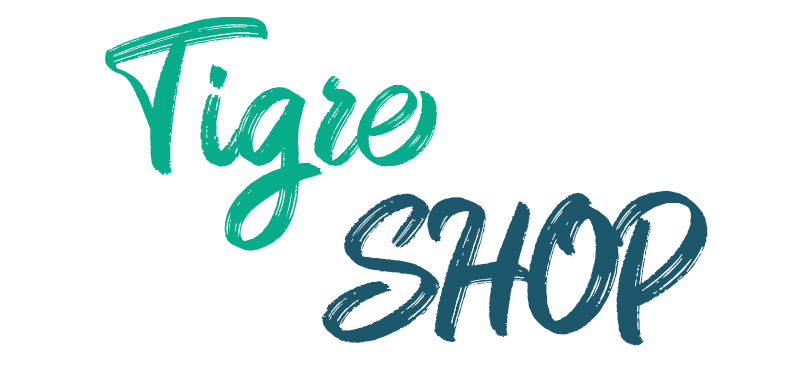

<nav class="navbar " style="position: absolute;">
  <div class="navbar-navigation">
    <a routerLink="/" routerLinkActive="router-link-active">Inicio</a>
    <a routerLink="/ropa">Ropa</a>
    <a routerLink="/accesorios">Accesorios</a>
  </div>
  <div class="navbar-img">
    
  </div>
  <p class="nombre"> usuario : {{user }}</p>
  <div class="navbar-profile">
    <div class="navbar-profile-search">
      <div class="navbar-profile-icon">
        <i class="fas fa-search"></i>
      </div>
      <div class="navbar-profile-input">
        <input type="text" placeholder="Buscar">
      </div>
    </div>
    <div class="circle">
      <i class="fas fa-shopping-bag"></i>
      <div class="notification">12</div>
    </div>
    

    <button *ngIf="isLogged" (click)="logout()">Cerrar Sesion</button>

  </div>
</nav>
